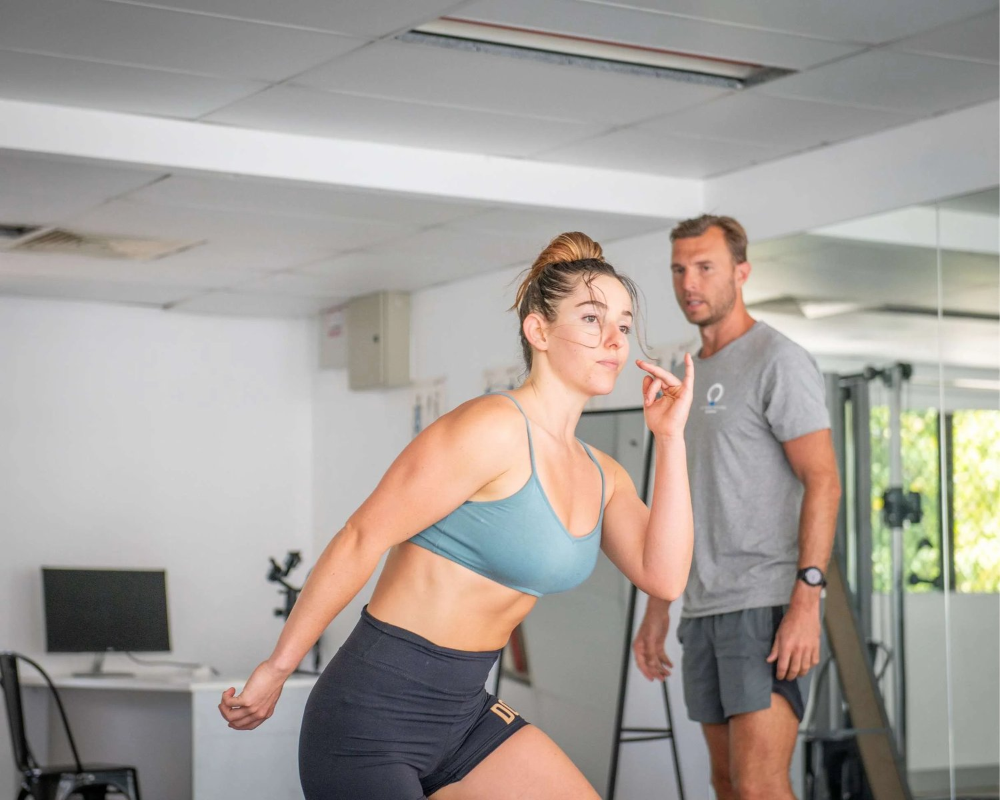
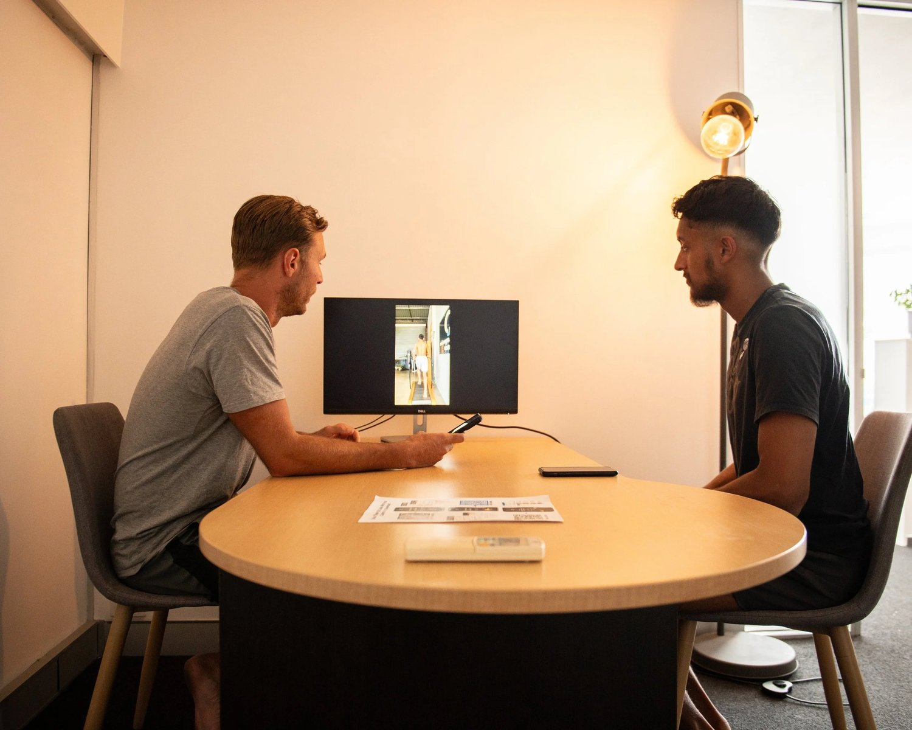

Pain beneath the shoulder blade is one of the most common — and misunderstood — complaints we see.
It might feel:
-
sharp or aching
-
under the right shoulder blade
-
beneath the left shoulder blade
-
between the shoulder blades
And despite massage, stretching, or posture work, it keeps coming back.
That’s because shoulder blade pain is rarely a shoulder problem.

Why Pain Beneath the Shoulder Blade Is So Common
The shoulder blade (scapula) sits on the ribcage.
It doesn’t move independently — it responds to how the spine, ribs, and pelvis are moving underneath it.
When force isn’t distributed evenly through the body:
-
one shoulder blade overworks
-
muscles beneath the scapula stay “on”
-
tension accumulates instead of resolving
This is why pain often appears on one side only.

Understanding the Shoulder Blade and Its Role in Movement
The scapula’s job is to:
-
glide smoothly on the ribcage
-
transfer force between arms and trunk
-
stabilise during walking, running, and rotation
If the ribcage doesn’t rotate well — or the pelvis is asymmetrical — the scapula compensates.
Over time, this creates pain beneath the shoulder blade, not because the muscle is “tight”, but because it’s overloaded.
Common Pain Patterns (Right vs Left vs Between Blades)
- Pain under right shoulder blade
Often linked to dominant-side overuse and poor trunk rotation.
- Pain under left shoulder blade
Common in people with rib flare or limited thoracic rotation.
- Pain between shoulder blades
Usually reflects poor load transfer through the spine rather than local muscle strain.
Pain location tells you where stress accumulates, not where the problem starts.
Why Posture Correction Exercises Rarely Fix This

Posture correction exercises are often static:
-
“sit up straight”
-
“pull shoulders back”
-
“strengthen upper back”
But posture is dynamic.
If your walking mechanics, arm swing, and rotation are dysfunctional, your posture will collapse the moment you move.
This is why posture correction exercises alone rarely resolve shoulder blade pain.
The Real Root Causes of Pain Beneath the Shoulder Blade
Common contributors include:
-
asymmetrical gait patterns
-
limited thoracic rotation
-
poor rib-to-pelvis coordination
-
repetitive sports or desk postures without balance
Sports injuries, muscle strain, or nerve irritation are often secondary effects, not the root cause.
Why Most Treatments Only Provide Temporary Relief
Modalities can help — briefly:
-
myofascial release techniques
-
therapeutic massage benefits
-
chiropractic care Brisbane
-
physical therapy Brisbane
They reduce symptoms by calming the nervous system.
But without changing how load moves through the body, pain returns.
Relief ≠ resolution.

How Functional Movement Training Resolves the Problem
At Functional Patterns Brisbane, shoulder blade pain is approached systemically.
Functional movement training focuses on:
-
restoring gait symmetry
-
improving rib and pelvic rotation
-
redistributing load across the body
-
integrating arms, spine, and hips
This reduces the need for constant pain management strategies because the stress pattern itself changes.
Injury Prevention Techniques That Actually Work
True injury prevention techniques aren’t drills — they’re outcomes.
When movement is balanced:
-
tissues recover faster
-
overuse patterns resolve
-
shoulder blade pain stops recurring
This is why Functional Patterns sits closer to sports injury rehabilitation than generic exercise programs.
Holistic Health Approaches That Support Recovery
Supportive factors matter:
-
ergonomic assessment services for work setups
-
nutrition and sleep quality
-
stress regulation and breathing
-
wellness coaching Brisbane for lifestyle alignment
But none replace correcting movement mechanics.
They support the process — they don’t drive it.
What to Avoid If You Have Shoulder Blade Pain
Avoid:
-
endlessly stretching the painful area
-
chasing trigger points
-
strengthening without coordination
-
relying solely on passive treatments
These manage symptoms without resolving the cause.
How Long Does It Take to Resolve Shoulder Blade Pain?
Timelines vary, but many people feel:
-
reduced tension within weeks
-
improved movement control quickly
-
long-term relief once patterns change
Progress depends on how consistently movement is retrained.
When to Seek Professional Help in Brisbane
If pain:
-
keeps returning
-
switches sides
-
worsens with activity
-
hasn’t responded to treatment
It’s time for a movement assessment, not another modality.
Final Thought
Pain beneath the shoulder blade is not random.
It’s your body adapting to uneven load.
Change the movement — and the pain stops being necessary.